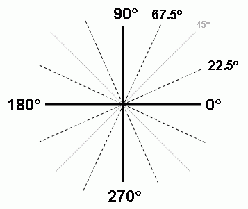
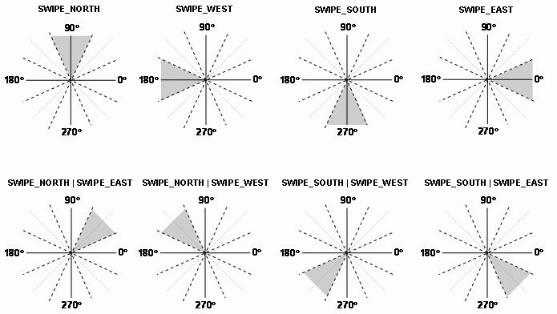

net.rim.device.api.ui.TouchGesture
net.rim.device.api.ui.TouchGesture
|
|||||||||
| PREV CLASS NEXT CLASS | FRAMES NO FRAMES | ||||||||
| SUMMARY: NESTED | FIELD | CONSTR | METHOD | DETAIL: FIELD | CONSTR | METHOD | ||||||||
java.lang.Object
public abstract class TouchGesture
TouchGesture represents a combination of basic touch input events originating from
the user. TouchGesture events are acquired using TouchEvent.getGesture() when a gesture is detected
(that is, when TouchEvent.getEvent() returns TouchEvent.GESTURE).
TouchGesture defines several common gestures, including TouchGesture.CLICK_REPEAT, TouchGesture.HOVER, PINCH,
TouchGesture.NAVIGATION_SWIPE, TouchGesture.SWIPE, and TouchGesture.TAP.
| Field Summary | ||
|---|---|---|
static int |
CLICK_REPEAT
Click and pause at a specific point on the touch screen for more than 500 milliseconds. |
|
static int |
DOUBLE_TAP
Two consecutive quick touch and release gesture on the touch screen. |
|
static int |
HOVER
Touch and pause at a specific point on the touch screen for more than the user-defined number of milliseconds (configurable setting found in Screen/Keyboard Options). |
|
static int |
NAVIGATION_SWIPE
Quick motion gesture made with the trackpad. |
|
static int |
PINCH_BEGIN
Two touch points are detected on the touch screen, beginning a Pinch gesture. |
|
static int |
PINCH_END
One or both touch points are released during a Pinch gesture. |
|
static int |
PINCH_UPDATE
One or both touch points are moved during a Pinch gesture. |
|
static int |
SWIPE
Quick motion gesture across the touch screen. |
|
static int |
SWIPE_EAST
Gesture direction equivalent that is to 0 degrees +/- 45 degrees relative to the device's current upward direction. |
|
static int |
SWIPE_NORTH
Gesture direction that is equivalent to 90 degrees +/- 45 degrees relative to the device's current upward direction. |
|
static int |
SWIPE_SOUTH
Gesture direction that is equivalent to 270 degrees +/- 45 degrees relative to the device's current upward direction. |
|
static int |
SWIPE_WEST
Gesture direction that is equivalent to 180 degrees +/- 45 degrees relative to the device's current upward direction. |
|
static int |
TAP
Quick touch and release gesture on the touch screen. |
|
| Method Summary | ||
|---|---|---|
int |
getClickRepeatCount()
Retrieves the number of TouchGesture.CLICK_REPEAT events generated before the user moves or
releases from the touch screen. |
|
abstract int |
getEvent()
Retrieves the event code associated with this touch gesture. |
|
int |
getHoverCount()
Retrieves the number of TouchGesture.HOVER events generated before the user moves or
removes touch from the touch screen. |
|
float |
getPinchMagnitude()
Retrieves the pinch magnitude of the TouchGesture.PINCH_BEGIN, TouchGesture.PINCH_UPDATE, or
TouchGesture.PINCH_END event currently being processed. |
|
int |
getSwipeAngle()
Retrieves the angle (in degrees) associated with a swipe gesture relative to the device's current upward direction. |
|
int |
getSwipeContentAngle()
Typically Touchscreen SWIPE is used to move content off screen in the direction of the swipe (with new content moving onscreen from the other direction). |
|
int |
getSwipeDirection()
Retrieves the relative cardinal direction associated with a swipe gesture based on the device's upward direction. |
|
int |
getSwipeMagnitude()
Retrieves the magnitude (in pixels) associated with a swipe gesture. |
|
int |
getTapCount()
Retrieves the consecutive number of TouchGesture.TAP events generated before the user moves or maintains
touch for greater than 150 milliseconds. |
|
| Methods inherited from class java.lang.Object |
|---|
equals, getClass, hashCode, notify, notifyAll, toString, wait, wait, wait |
| Field Detail |
|---|
public static final int HOVER
HOVER event is generated at this interval in milliseconds
until the user moves or removes touch from the touch screen.
Invoke TouchGesture.getHoverCount() to retrieve the number of consecutive HOVER events.
public static final int SWIPE
TouchGesture.getSwipeAngle() and TouchGesture.getSwipeMagnitude() to retrieve the angle and magnitude of the swipe, respectively.
Invoke TouchGesture.getSwipeDirection() to retrieve the cardinal direction of the swipe.
public static final int CLICK_REPEAT
CLICK_REPEAT event is generated every 500 milliseconds until the user moves or removes touch
from the touch screen.
Invoke TouchGesture.getClickRepeatCount() to retrieve the number of generated consecutive CLICK_REPEAT events.
public static final int TAP
TAP events are independent of TouchEvent.UP events, i.e. applications
will receive a TAP event prior to a TouchEvent.UP. Invoke TouchGesture.getTapCount() to retrieve the number of consecutive taps
(for example, double-tap or triple-tap).
public static final int DOUBLE_TAP
DOUBLE_TAP events are independent of
TouchGesture.TAP and TouchEvent.UP events,
i.e. applications will receive a DOUBLE_TAP event after a TouchGesture.TAP and prior to a TouchEvent.UP.
public static final int SWIPE_NORTH
TouchGesture.getSwipeAngle() and TouchGesture.getSwipeDirection().
public static final int SWIPE_SOUTH
TouchGesture.getSwipeAngle() and TouchGesture.getSwipeDirection().
public static final int SWIPE_EAST
TouchGesture.getSwipeAngle() and TouchGesture.getSwipeDirection().
public static final int SWIPE_WEST
TouchGesture.getSwipeAngle() and TouchGesture.getSwipeDirection().
public static final int PINCH_BEGIN
TouchEvent.getX(1) and TouchEvent.getY(1).
public static final int PINCH_UPDATE
PINCH_UPDATE events as the user moves one or both fingers.
Invoke TouchGesture.getPinchMagnitude() to retrieve the zoom value during a PINCH_UPDATE event.
public static final int PINCH_END
TouchGesture.getPinchMagnitude() to retrieve the zoom value during a PINCH_END event.
public static final int NAVIGATION_SWIPE
TouchGesture.getSwipeDirection() to retrieve the cardinal direction of the swipe.
The swipe magnitude is currently always 1.
| Method Detail |
|---|
public abstract int getEvent()
TouchGesture.HOVER, TouchGesture.SWIPE,
TouchGesture.CLICK_REPEAT, TouchGesture.TAP, TouchGesture.DOUBLE_TAP,
TouchGesture.PINCH_BEGIN, TouchGesture.PINCH_UPDATE, TouchGesture.PINCH_END,
or TouchGesture.NAVIGATION_SWIPE.public int getHoverCount()
TouchGesture.HOVER events generated before the user moves or
removes touch from the touch screen. A new consecutive TouchGesture.HOVER event is generated every 100 milliseconds.
TouchGesture.HOVER events.public int getClickRepeatCount()
TouchGesture.CLICK_REPEAT events generated before the user moves or
releases from the touch screen. A new consecutive TouchGesture.CLICK_REPEAT event is generated every 500 milliseconds.
TouchGesture.CLICK_REPEAT events.public int getSwipeAngle()

public int getSwipeMagnitude()
public int getSwipeDirection()
TouchGesture.SWIPE_NORTH always refers
to the side of the display closest to the top of the device. Swipe gestures
that occur at 90 degree intervals (North, South, West, East) are +/- ~23 degrees.
For example, TouchGesture.SWIPE_NORTH is returned for (67, 112], where 67 is exclusive,
and 112 is inclusive. For swipe gestures occurring at a 45 degree interval +/-
~23 degrees, the two directions are bitwise ORed, so 135 degrees returns
TouchGesture.SWIPE_NORTH | TouchGesture.SWIPE_WEST.

TouchGesture.SWIPE_NORTH, TouchGesture.SWIPE_SOUTH, TouchGesture.SWIPE_EAST,
TouchGesture.SWIPE_WEST, or a bitwise ORed combination of two swipe events.
Returns 0 if the gesture is not a swipe.public int getSwipeContentAngle()
public int getTapCount()
TouchGesture.TAP events generated before the user moves or maintains
touch for greater than 150 milliseconds.
TouchGesture.TAP events.public float getPinchMagnitude()
TouchGesture.PINCH_BEGIN, TouchGesture.PINCH_UPDATE, or
TouchGesture.PINCH_END event currently being processed.
|
|||||||||
| PREV CLASS NEXT CLASS | FRAMES NO FRAMES | ||||||||
| SUMMARY: NESTED | FIELD | CONSTR | METHOD | DETAIL: FIELD | CONSTR | METHOD | ||||||||
Copyright 1999-2011 Research In Motion Limited. 295 Phillip Street, Waterloo, Ontario, Canada, N2L 3W8. All Rights Reserved.
Java is a trademark of Oracle America Inc. in the US and other countries.
Legal